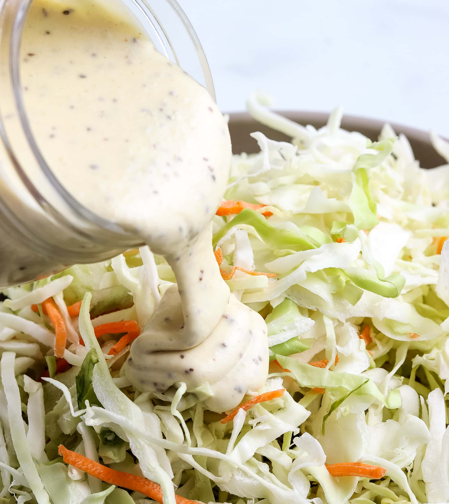

Coleslaw Dressing

A creamy coleslaw dressing that can be made with ingredients you already have!
Ingredients:
- ½ cup mayonnaise .
- 2 tablespoons white sugar
- 1 ½ tablespoons lemon juice
- ½ teaspoon ground black pepper
- 1 tablespoon vinegar
- ¼ teaspoon salt
Directions:
- Gather all ingredients.
- Whisk mayonnaise, sugar, lemon juice, vinegar, pepper, and salt together in a bowl until smooth and creamy.
- Store in an airtight container.
source